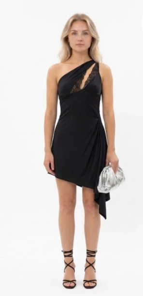
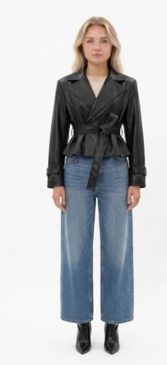

Планируй
гардероб заранее
Сохраняй образы в папки — под поездку, сезон или вишлист
В отпуск

Хочу

Осень 2026

+ Новая папка
сколько угодно папок
Сохраняй образы в папки — под поездку, сезон или вишлист

